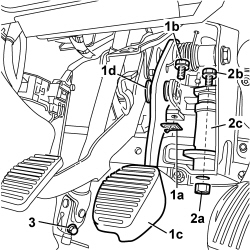
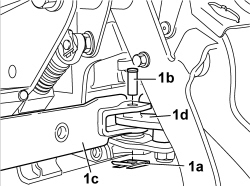
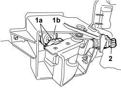
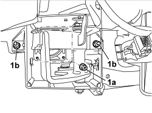
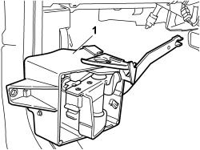

3330D74 IDLER SHAFT MOUNT ON BRAKE SERVO R R FOR RHD VERSIONS
- Path
- Procedures > 33 BRAKING SYSTEM > 3330 HYDRAULIC BRAKING SYSTEM > 3330D BRAKE VACUUM SYSTEM > 3330D74 IDLER SHAFT MOUNT ON BRAKE SERVO R R FOR RHD VERSIONS
- Kind
- repair procedure (removal / refitting; the operation number is the code)
- Applies to
- engines: 1.2 8v; all production periods; only with equipment: Right hand drive
- Interactive page
- https://sloeber94.github.io/elrnDB-fPnd/en/#/169002215
Applies to: engines: 1.2 8v; all production periods; only with equipment: Right hand drive
 Removing
Removing
 Refitting
RefittingOp. 5530B56 BATTERY DRIP TRAY COVER - R.R.
Disconnect the negative battery terminal.
Description | Connector | |
|---|---|---|
- | Battery | A001 |
Op. 7040A28 TRIM ON GEARBOX CONTROL PANEL - R.R.
Op. 7040A14 FLAP OF GLOVE COMPARTMENT TRIM ELEMENT (ONE) - ARRANGE
Op. 7040A18 GLOVE COMPARTMENT ON FACIA - ARRANGE
Op. 7040A83 INSTRUMENT PANEL LEFT LOWER COATING - R.R. FOR RIGHT DRIVE VERSIONS
1. Remove clip (1a) and withdraw retaining pin (1b), then release brake pedal (1c) from connection fork (1d).
2. Withdraw nut (2a) and pull out pin (2b) on idler shaft (2c).
3. Unscrew the bolt and disengage the lower steering shaft from the steering box pinion.

Applies to: engines: 1.2 8v; all production periods; only with equipment: Right hand drive
1. Remove retaining clip (1a), withdraw pin (1b) and separate the brake servo idler shaft (1c) from the idler shaft (1d).

Applies to: engines: 1.2 8v; all production periods; only with equipment: Right hand drive
Working from inside the left side of the passenger compartment, remove the brake servo idler shaft mount protective cover.
1. Undo clips (1a) to release the brake servo pushrod (1b).
2. Unscrew the brake light switch from the idler shaft mount and remove.

Applies to: engines: 1.2 8v; all production periods; only with equipment: Right hand drive
1. Unscrew nuts (1a) on the brake servo pushrod and side nuts (1b) on the brake servo idler shaft mount.

Applies to: engines: 1.2 8v; all production periods; only with equipment: Right hand drive
1. Working inside the left side of the passenger compartment, remove the idler shaft mount assembly on the brake servo and arrange on a work bench.

Applies to: engines: 1.2 8v; all production periods; only with equipment: Right hand drive
Op. 3330D70 IDLER SHAFT ON BRAKE SERVO R R FOR RHD VERSIONS
Op. 3330D23 REACTION ROD ON BRAKE SERVO MASTER CYLINDER R R FOR RHD VERSIONS
Applies to: engines: 1.2 8v; all production periods; only with equipment: Right hand drive
Refitting
RemovingOp. 3330D23 REACTION ROD ON BRAKE SERVO MASTER CYLINDER R R FOR RHD VERSIONS
Op. 3330D70 IDLER SHAFT ON BRAKE SERVO R R FOR RHD VERSIONS
Fit the idle shaft mount assembly on the brake servo inside the passenger compartment on the left side. Fit the assembly to the brake servo pins without securing the nuts; this is to facilitate subsequent installation operations.
With the aid of a second operator, work on the right side of the vehicle in the pedal unit area. Place the brake servo idler shaft on the mount on the pedal unit idler shaft, then insert the retaining pin and lock with the clip.
Working on the left side of the passenger compartment, tighten the nuts securing the idle shaft mount to the brake servo to the correct torque.
Value daNm | Fastening | Component | Ø | |
|---|---|---|---|---|
- | 2.2 | Nut | - | M8 |
Fit the brake light switch in its seat on the idle shaft mount on the brake servo.
Fit the brake servo pushrod to the reaction pushrod on the master cylinder.
Arrange the idler shaft mount cover on the brake servo.
Working from the right side of the passenger compartment, fit the idle shaft retaining pin on the pedal, then tighten the nut to the specified torque.
Value daNm | Fastening | Component | Ø | |
|---|---|---|---|---|
- | 1.4 - 1.8 | Bolt | - | - |
Arrange the brake pedal on the collection fork, then insert the pin and the clip.
Connect the lower steering shaft to the steering box pinion and tighten the bolt to the specified torque.
Value daNm | Fastening | Component | Ø | |
|---|---|---|---|---|
- | 2.2 | Nut | - | M8 |
Op. 7040A83 INSTRUMENT PANEL LEFT LOWER COATING - R.R. FOR RIGHT DRIVE VERSIONS
Op. 7040A18 GLOVE COMPARTMENT ON FACIA - ARRANGE
Op. 7040A14 FLAP OF GLOVE COMPARTMENT TRIM ELEMENT (ONE) - ARRANGE
Op. 7040A28 TRIM ON GEARBOX CONTROL PANEL - R.R.
Connect the negative battery terminal.
Description | Connector | |
|---|---|---|
- | Battery | A001 |
Topics linked from this page (6)
- 3330D23 REACTION ROD ON BRAKE SERVO MASTER CYLINDER R R FOR RHD VERSIONS
- 3330D70 IDLER SHAFT ON BRAKE SERVO R R FOR RHD VERSIONS
- 5530B56 BATTERY DRIP TRAY COVER - R.R.
- 7040A14 flap of glove compartment trim element (one) - arrange
- 7040A18 glove compartment on facia - arrange
- 7040A28 TRIM on gearbox control panel - R.R.